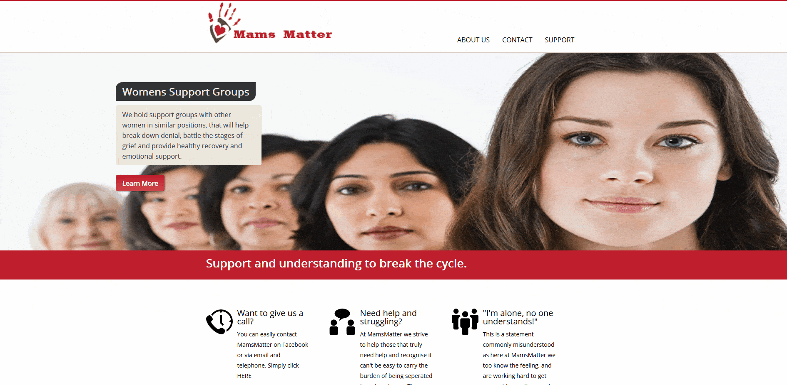

Aim:
A new start up business run by a local friend was in need of a fresh website to market the business within the Blaenau Gwent area. The intended design was to be simple and informative.
Time Period:
Given the business was fresh and has only been operational for a short period of time, this gave me a relatively long time-scale to produce a suitable site. From start to completion the project took 2 months.
Design:
The overall design of the site was something I had pondered over for a period of time. Trying to get the right balance of simplicity for the user’s interactions whilst giving a useful amount of information to help the guide the user on what they required.
Nav:
The navigation bar was relatively easy to implement with the use of a logo and some headings that utilised an auto scroll JQuery feature to scroll the page down to the correct section.
The thinking behind this set up was that it minimised the amount of pages needed. Saving on loading times and bandwidth usage. Something I’m keen on implementing and constantly trying to improve my knowledge on.
Layout:
Layout is a very important aspect of any web design, thus its essential to get the layout to be simplistic in design and user friendly in interaction. Mams matter was no exception utilising a simple block section template.
With each category e.g. Welcome, About, Contact etc… all being included within its own container.
Unfortunately, due to evolving technologies and being a newbie in the field, I found myself using floats rather than either the now commonly used Flexbox or CSS-Grids techniques.
Colours:
The colour scheme utilised was simple at best and intended to reflect the colours within the logo. Using a Red hue for prominent features and then white and dark grey for anything as background content.
Stand Out Features:
- Auto scroll via JQuery
- Modal upon clicking an image
- Image shake when hovering over them
- Video implementation using JScript
Design Process Summary:
Throughout the design process of this project, I noted a few things I’d consider redesigning if I were to come back to it. The main issues with the site I’d reconsider would mostly focus on the efficiency and scalability of the site.
Responsiveness:
My biggest concern with the site is responsiveness, due to the site only partially working when scaled down to mobile size. Given this was the first project I attempted to introduce mobile design I took a simplistic approach using media queries. Although this proved to only partially work due to the vast amount of possible screen dimensions, thus the site fails to scale properly under certain resolutions.
Layout:
The next concern was the use of floats and the display attribute to align items. Although this approach isn’t considered entirely wrong, It does lead to some complications that can be overcome using the newer Flexbox and CSS grids which I failed to incorporate into the design. Something for the future!
Design Concept Process:
When originally developing the site I never drew up any concepts or alternative designs other than what I was churning out at the time. After much thought I realise this is not only bad for the end product but also bad practice.
With this knowledge, I would start again y first sketching up layouts and a colour palette for a theme and style, then using this design on the appropriate location of all elements whilst piecing the style on top to get an overview before spending countless hours coding.